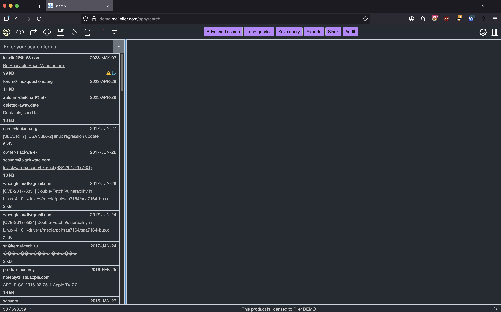

Authenticating against Google Workspace (formerly known as GSuite)#
This documentation applies to Piler enterprise edition 2.0.0
Revision #1
Publication date: 2025-SEP-26
Google Workspace is a widely used email platform. This documentation describes how to setup Single Sign-On (SSO).
Prerequisites#
You have your own domain at Google Workspace.
Register the archive as a web application#
Go to https://console.developers.google.com/apis/credentials then click on “Create credentials”, then select “OAuth Client ID”.
Fill the required fields, then click on the “CREATE” button. see the image below. Make sure you use your own archive’s hostname.
Then you’ll see a popup window that “OAuth client created”. Record the client id and the client secret values.

ENABLE_GOOGLE_AUTH=true
GOOGLE_REDIRECT_URL=https://archive.example.com/auth/google/callback
GOOGLE_CLIENT_ID=303962613204-lbusc167ip7oleddkrad0n66jml2igce.apps.googleusercontent.com
GOOGLE_CLIENT_SECRET=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
Configure Google to send a copy of each received email to piler#
Visit https://admin.google.com/AdminHome?hl=en#AppDetails:service=email then select “Advanced settings”.
Find the “Routing” section, hover over the “Receiving routing” item, then click “Configure”.
Give a name to the setting, eg. “piler-receiving-rule”.
Check the “Inbound”, and “Internal – receiving” checkboxes under “1. Email messages to affect”.
Check the “Add X-Gm-Original-To header” option.

Right under the “Also deliver to” option check “Add more recipients”, select “Advanced”, then check “Change envelope recipient”, and type the archiving email address at “Replace recipient”.

Click on “Save”, then on “Add setting”.
Do the same for “Sender routing”, except select “Outbound”, and “Internal – sending” at “1. Email messages to affect”
Finally click on the “Save changes” button.
Login for end users#
Users should click on the “Google Workspace” link, then grant permission to the registered web application to read the user’s settings.

If all goes well, then the user is redirected back to the archive and has access to his archived emails.
